单细胞分析原来也可以如此简单
原文：https://mp.weixin.qq.com/s?__biz=MzAwMzIzOTk5OQ==&mid=2247532560&idx=1&sn=cf7405d7865af5be0ec3adda6b8da484&chksm=9b3c3940ac4bb0561b706d5672002ea7b560a271b2166dc055a85c3f8cd3446002306574d3e1#rd 合集：单细胞云平台

写在前面


临床工作繁重、天天做实验，哪有时间学代码？9h免费视频让你零代码学会分析scRNA-seq分析
在之前的活动，看视频，赢scRNA-seq样本分析权限内容末尾我们给同学们布置了如下文献结果复现作业，复现教程可见SeekSoul® Online单细胞云平台以及视频教程已在B站(https://www.bilibili.com/video/BV1anpMznE18/)上线。同时，我们的同名视频号也在持续更新中，欢迎大家关注~我们也为大家准备了SeekSoulOnline云平台交流群。
SeekSoulOnline以article的形式发表在期刊《The Innovation Life》上，题为"SeekSoul Online: A user-friendly bioinformatics platform focused on single-cell multi-omics analysis"。也就是说，大家用SeekSoul Online分析数据后终于可以在发文时引用
B站视频：https://www.bilibili.com/video/BV1anpMznE18/
我们的视频号免费课程持续更新中，目前已完结scRNA-seq基础分析、拟时序分析、细胞通讯分析等系列课程。关注我们，后面还有超多教学~
课程资料下载：
https://pan.baidu.com/s/1UPxTwJ0sIAzj3I-LpUSG3Q?pwd=h9v9
云平台注册链接：
https://seeksoul.online/t_static/Biomamba/Biomamba.html
注册即免费获得一个月分析权限。完成下方作业打卡，即可免费获取3个月的云平台使用权限！


复现结果
我们的同学们已经将复现的作业提交了，这里展示原文和同学们的复现结果：作业：文章标题：Single cell analysis in head and neck cancer reveals potential immune evasion mechanisms during early metastasis文章中文标题：对头颈部癌症的单细胞分析揭示了早期转移过程中潜在的免疫逃逸机制文章链接：https://www.nature.com/articles/s41467-023-37379-y发表期刊：《Nature Communications》样本名称：(1)如下图的文章展示 进行大群注释、组间umap图、各细胞类型marker基因小提琴图展示、细胞类型占比分布 (2)对肿瘤细胞（就是上皮细胞，拷贝数变异已确定）完成细胞亚群分析（图a），对个样本上皮细胞EMT基因集打分（图b）；对HN251、HN279样本的肿瘤细胞进行组间拟时序分析（图c、d）
(2)对肿瘤细胞（就是上皮细胞，拷贝数变异已确定）完成细胞亚群分析（图a），对个样本上皮细胞EMT基因集打分（图b）；对HN251、HN279样本的肿瘤细胞进行组间拟时序分析（图c、d）
作业的复现结果：一、pseudotime分布图
“伪时间(pseudotime)”是衡量单个细胞在如细胞分化等生物过程中进展程度的一种度量>指标。在许多生物过程中，细胞发育进展并不能完全同步,在同一时间捕获的细胞群，有些细胞可能已发育很成熟，而有些细胞可能还没开始分化。当想要了解细胞从一种状态转变到另一种状态发生的调控变化顺序时，这种异步性会发生问题。通过根据每个细胞延着轨迹进程对其进行排序，Monocle缓解了由不同步性引起的问题。Monocle将延着轨迹进展跟踪变化称为‘伪时间(pseudotime)。
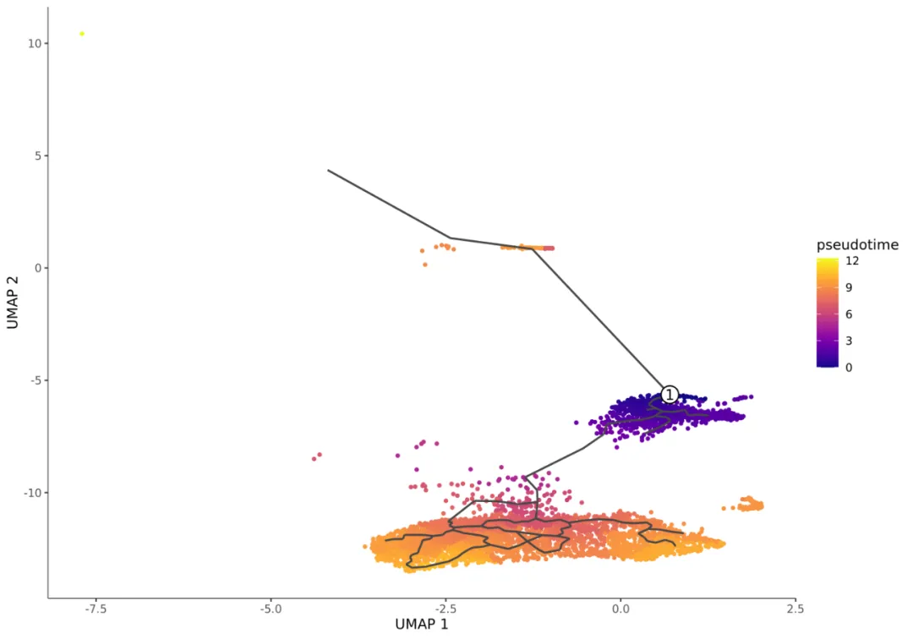
注: Pseudotime分布图，每个点代表一个细胞,黑色线代表构建的轨迹分支路径。此处针对所有细胞（未聚类分群）计算pseudotime，点的颜色越暗代表细胞越接近发育起始端，颜色越亮表示细胞处于发育末端。图中的白底圆圈的编号表示root节点。没有和root细胞处于一个partition的（离群）细胞则没有计算pseudotime，以灰色表示。
二、细胞轨迹分析
细胞类型的UMAP图和带有细胞命运节点的轨迹分支结构：
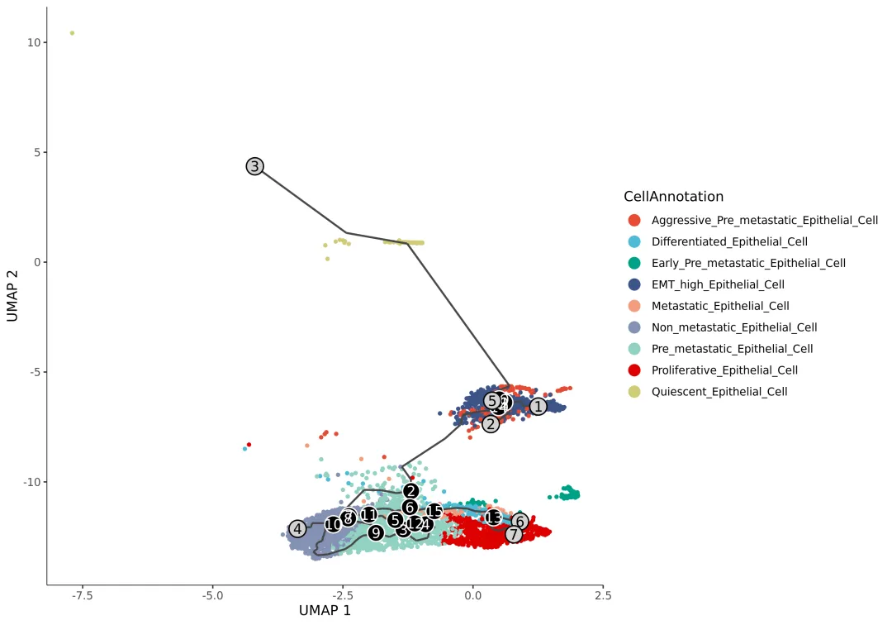
注: 图中每个点代表一个细胞，不同的颜色代表不同的细胞群，黑色线代表构建的轨迹分支路径。线上黑底圆圈的数字表示一个分支节点，连接不同分化命运（类比枝丫）；灰底圆圈表示终末分化状态，是细胞命运的最终结果（类比树叶）。数字随机分配，没有前后关系，可以结合pseudotime判定分化方向。
细胞类型的UMAP图和没有细胞命运节点的轨迹分支结构：
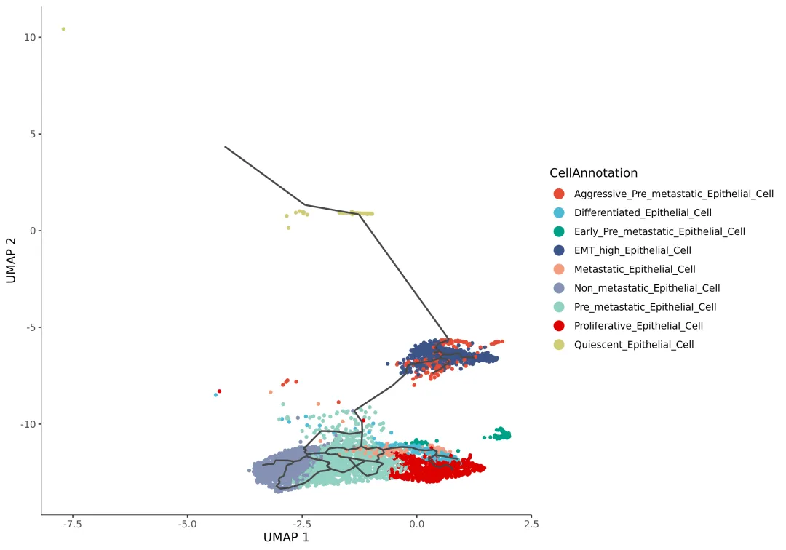
注: 图中每个点代表一个细胞，不同的颜色代表不同的细胞类型，黑色的线代表构建的轨迹结构。
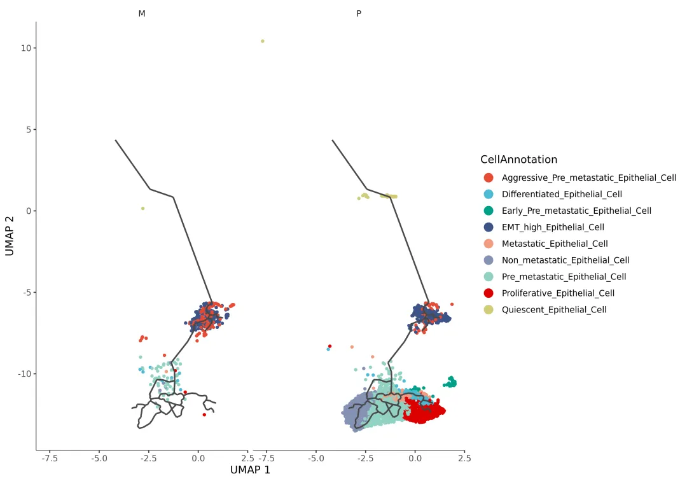
注: 图中每个点代表一个细胞，不同的颜色代表不同的细胞群，黑色线代表构建的轨迹分支路径。并列图片表示不同样本或分组。
三、基于Pseudotime的表达相关分析
为了找到随着pseudotime的发育进展而变化的基因，Monocle3提供了一种检测相近位置的细胞的基因表达是否相关的方法（Graph-autocorrelation analysis），寻找UMAP空间中细胞群之间差异的基因，称为Moran's I(莫兰指数)的空间自相关分析统计数据，可以根据morans_I对基因进行排序，表明效应大小。
每个基因的Moran’s I测试结果：
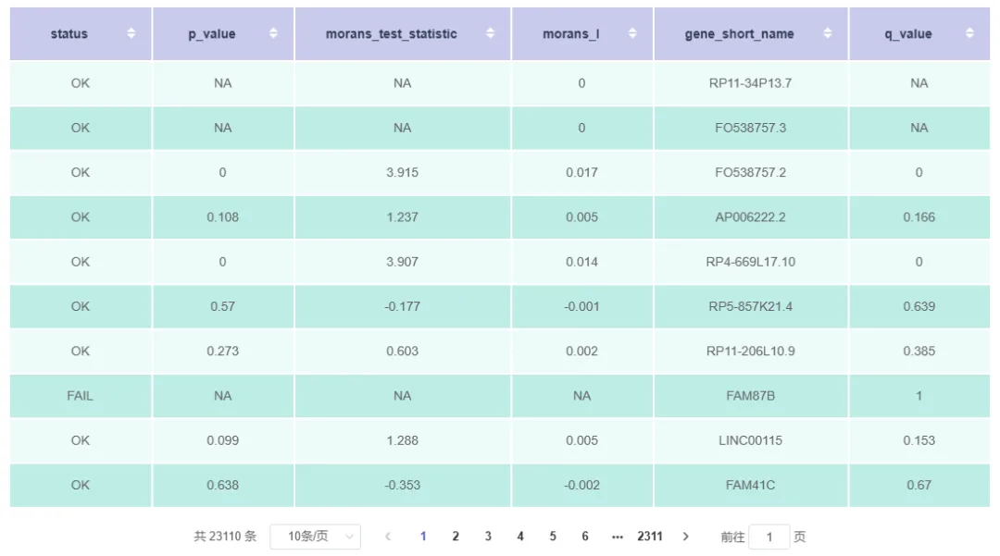
注:（1）status：基因状态。"OK"表示能够进行统计检验，"FAIL"表示无法进行统计检验； （2）p_value：p值； （3）morans_test_statistic：Moran'sI的标准差的值； （4）morans_I：值在-1到1之间，0表示基因没有共表达效应，而+1表明附近的细胞具有非常相似的基因表达值，-1表明附近细胞的基因表达值不具有相关性； （5）gene_short_name：基因名称； （6）q_value：校正后的p值。
根据莫兰指数选择Top10基因的轨迹分化结果：
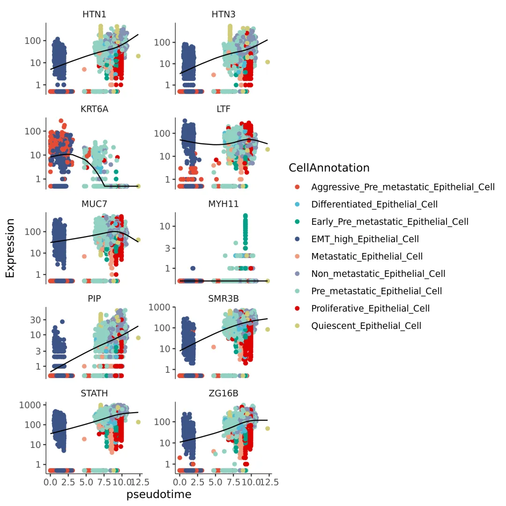
注: 每个点表示一个细胞，不同的颜色表示不同的细胞类型，横轴表示伪时间，纵轴表示基因的表达量。
四、寻找共调控基因模块
一旦找到在细胞群中表达有意义的基因簇，Monocle3可以将基因分组为不同的模块，它本质上对基因（而不是细胞）运行UMAP，然后使用Louvain算法将它们分组为模块。那么我们就可以得知哪些模块在哪些细胞群中高表达，得知从细胞初始分化状态到末端状态时表达量发生变化的基因，对基因模块做富集分析可以获知不同发育时间段细胞具有的功能及状态。
基于Pseudotime的基因模块列表：
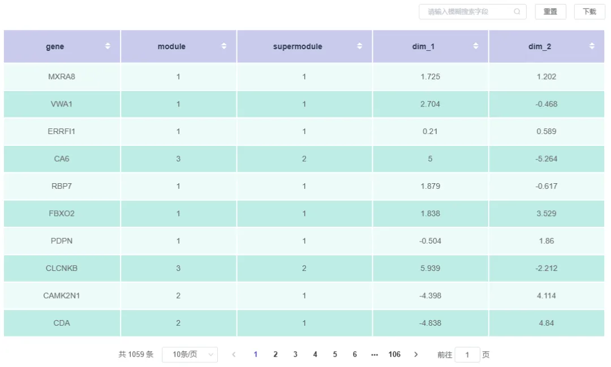
注: （1）gene：基因名称； （2）module：基因所属的模块； （3）supermodule：module所属的上一级； （4）dims_1；UMAP 1的坐标 （5）dims_2：UMAP 2坐标。
基因模块表达热图如下：
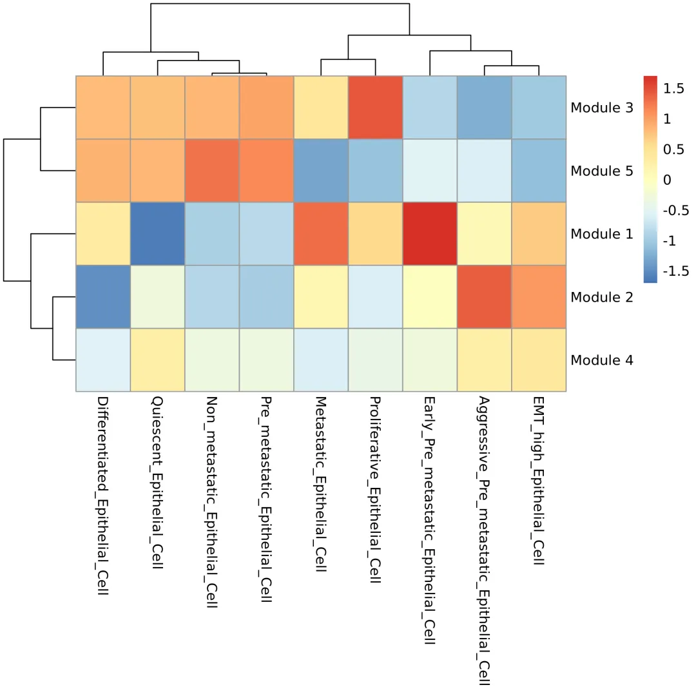
注: 图中横坐标是细胞类型，纵坐标是基因模块。颜色越红，代表基因模块平均表达量越高。
五、模块GO/KEGG功能富集结果
根据基因模块结果，利用clusterProfiler对每个基因模块进行富集分析，探究每个基因模块的功能特征。
GO(Gene Ontology)是描述基因功能的综合性数据库，可分为分子功能（Molecular Function），生物过程（biological process）和细胞组成（cellular component）三个部分。GO富集以padj小于0.05为显著富集。
GO富集结果如下：
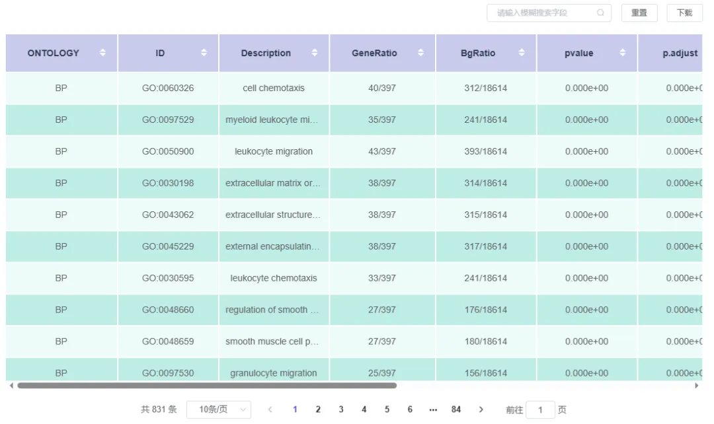
注: （1）ONTOLOGY: 功能分类 （2）ID：GO编号 （3）Description：GO编号对应的功能描述 （4）GeneRatio：module中注释到GO编号上的基因数与module基因总数的比值 （5）BgRatio：注释到GO编号上的背景基因数与背景基因总数的比值 （6）pvalue：显著性检验p值 （7）p.adjust：校正后的p值 （8）qvalue: 用FDR错误控制法对p-value作多重假设检验校正值 （9）geneID：注释到GO编号上的基因，括号里为基因ID对应的基因name，没有的用“-”表示 （10）Count：注释到GO编号上的基因数 （11）Links: 详细信息链接 （12）module：GO功能所属的基因模块。
KEGG(Kyoto Encyclopedia of Genes and Genomes)是整合了基因组、化学和系统功能信息的综合性数据库。KEGG富集以校正后的p值小于0.05为显著富集。
KEGG富集结果如下：
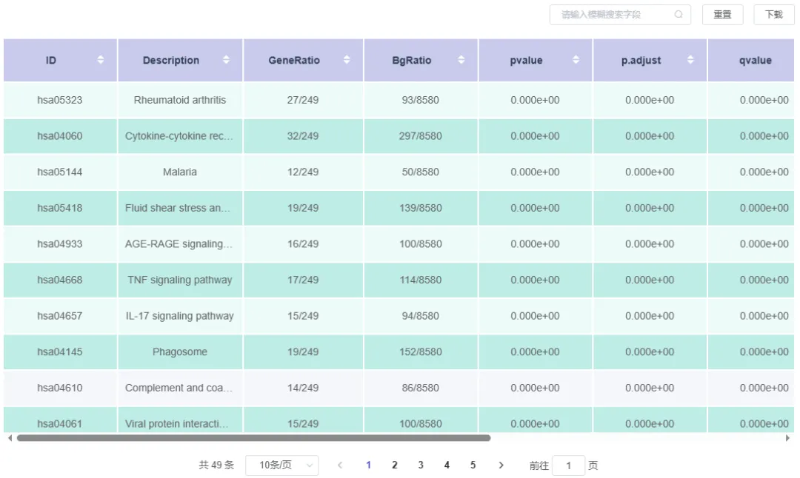
注: （1）ID：KEGG通路编号 （2）Description：KEGG通路编号对应的功能描述 （3）GeneRatio：注释到KEGG通路编号上的module基因数与module基因总数的比值 （4）BgRatio：注释到KEGG通路编号上的背景基因数与背景基因总数的比值 （5）pvalue：显著性检验p值 （6）p.adjust：校正后的p值 （7）qvalue: 用FDR错误控制法对p-value作多重假设检验校正值 （8）geneID：注释到KEGG通路编号上的基因，括号里为基因ID对应的基因name，没有的用“-”表示 （9）Count：注释到KEGG通路编号上的基因数 （10）Link: 详细信息链接 （11）module：KEGG功能所属的基因模块。
从GO/KEGG富集分析结果中，选取每个模块中基因覆盖度（GeneRatio）top 20，并且显著富集的Term绘制柱状图进行展示，若不足20个，则绘制所有Term信息。结果如下图所示:
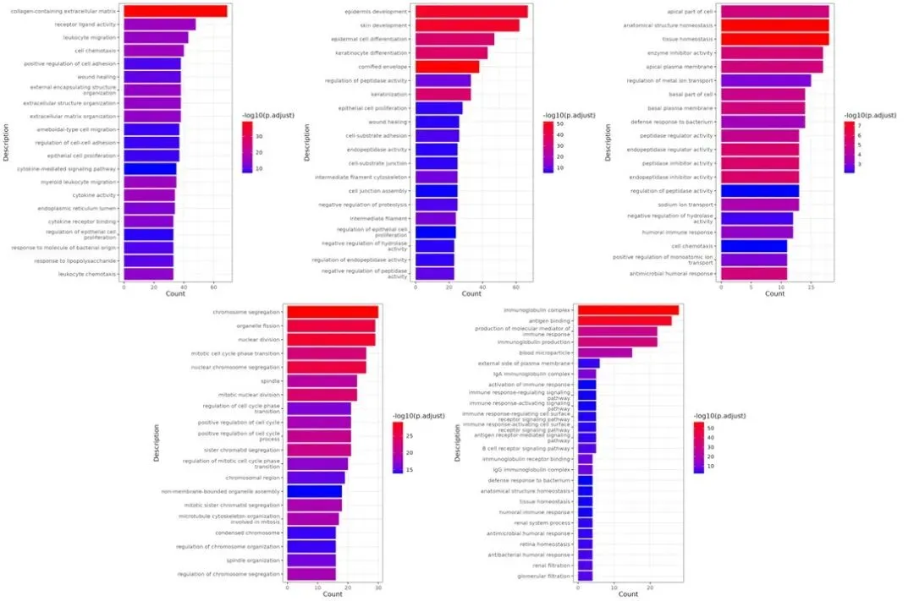
从GO/KEGG富集分析结果中，选取每个模块中最显著的20个Term绘制散点图进行展示，若不足20个，则绘制所有Term信息。结果如下图所示: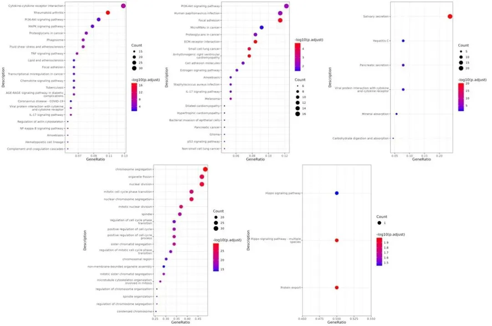
更多SeekSoul Online课程
一、基础教程
第一套：
第二套：
二、文章复现
零代码复现《Genome Medicine》|scRNA-seq解析CXCL16/CXCR6驱动驻留T细胞促进突触消除
** **
三、scATAC
持续更新中，敬请期待~

如何联系我们

 留一个领取资料、开箱即用的单细胞分析镜像的微信号[Biomamba_zhushou]，方便各位随时交流。同时我们也构建了交流群矩阵，欢迎大家入群讨论。
大家可以阅读完这几篇之后添加给生信入门初学者的小贴士
没有检索，就没有发言权
留一个领取资料、开箱即用的单细胞分析镜像的微信号[Biomamba_zhushou]，方便各位随时交流。同时我们也构建了交流群矩阵，欢迎大家入群讨论。
大家可以阅读完这几篇之后添加给生信入门初学者的小贴士
没有检索，就没有发言权
已有生信基地联系方式的同学无需重复添加

 您点的每个赞和在看，我都认真当成了喜欢
您点的每个赞和在看，我都认真当成了喜欢